JP Silva
Selected work
On stage. In the pit.

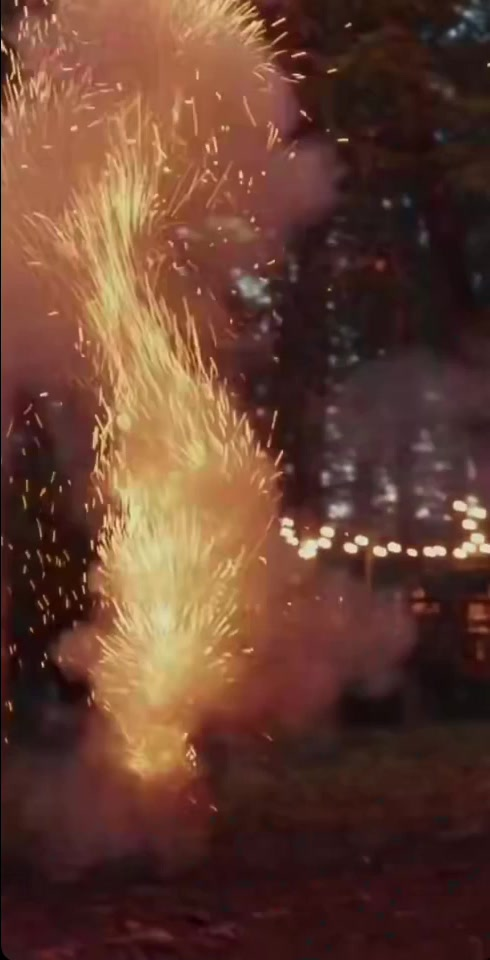
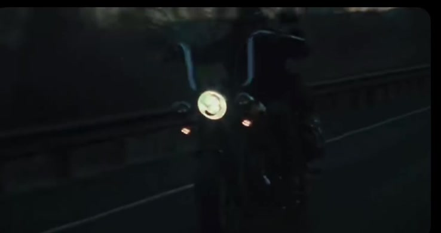
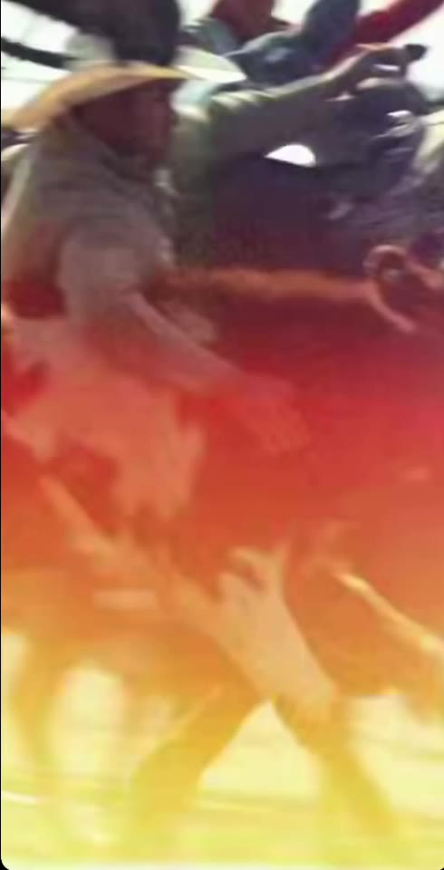
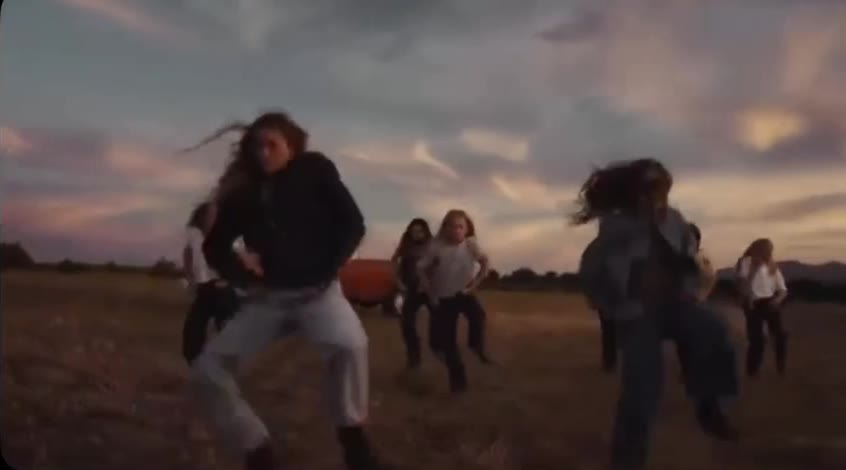
Live rooms, reel cuts and music-video frames. Camera and edit, shot from the pit, the wings and the road.
Cut to the beat.
-

Music VideoDirection, Camera
Field at Dusk
-
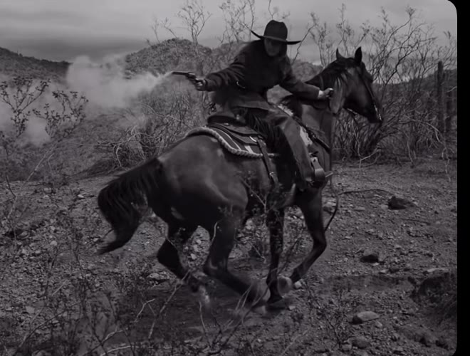
Music VideoDirection, Camera
Western, Black & White
-
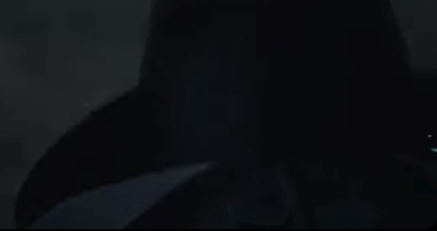
Music VideoCamera, Edit
Night Ride
-

Music VideoCamera
Desert Highway
Showreel
The reel. 47 seconds. No sound.
A cross-section of the work: live rooms, sets, the road. Muted. Plays when you press it.

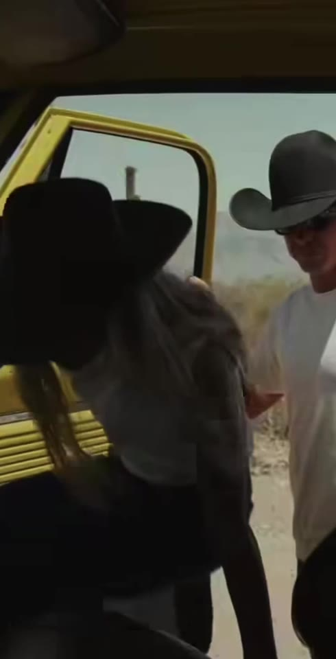

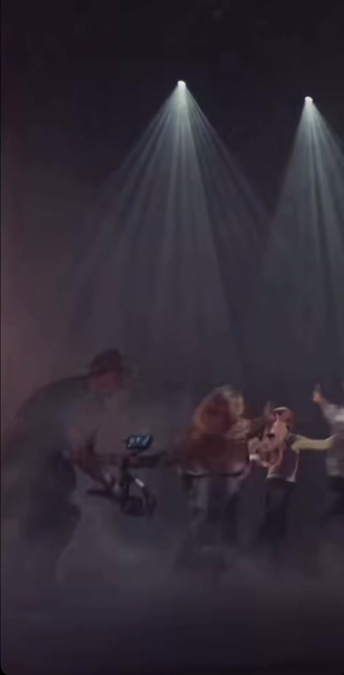
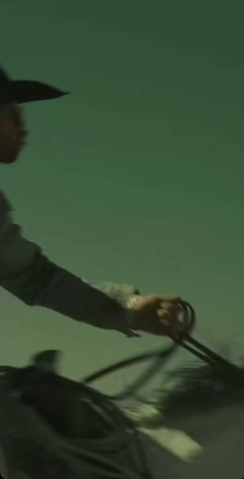

Long-form, on YouTube Five films, full length, with sound

Shot in the room.
Cut to the beat.
Nothing staged.
Portraits
Photography
Portraits, monochrome frames and the studio between shows. The quiet pictures, and the prints.
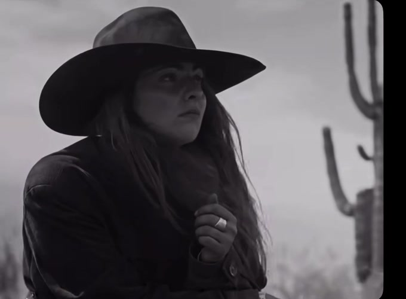
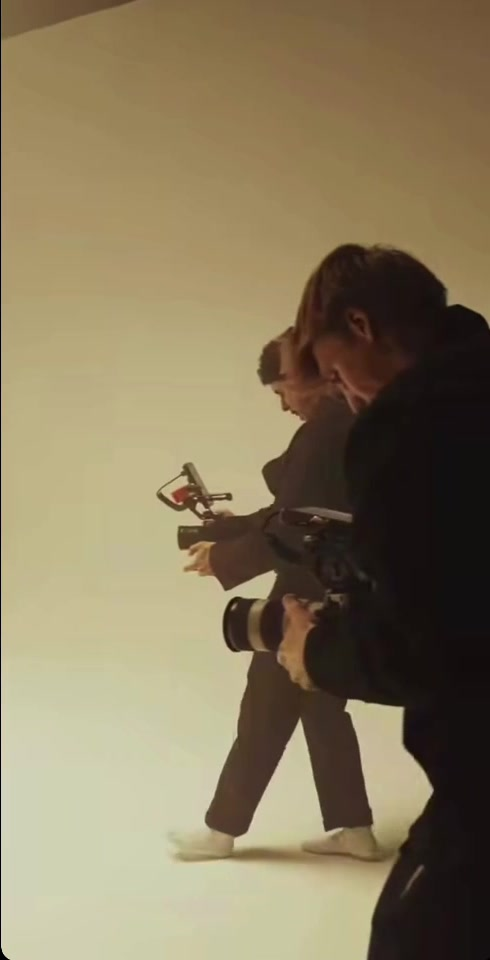


JP Silva
JP Silva is a filmmaker, producer and photographer based in Austin, Texas. He shoots live music, music videos and tours, and photographs portraits, landscapes and the moments behind the scenes.
The brief is always the same: find the honest emotion in the room and keep it.
From Bauru, BR To Austin, TX